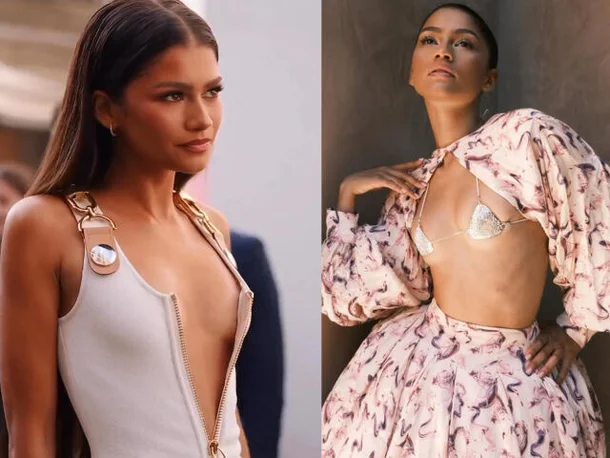
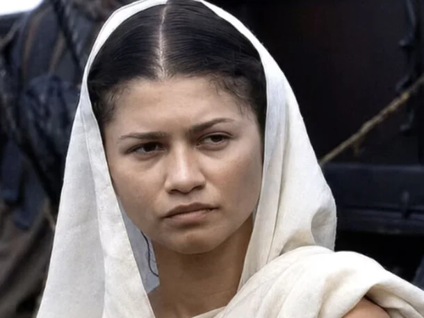

'오디세이' 젠데이아 출연료, 단 6장면에 120억…앤 해서웨이는 100억 : 네이트 연예


'오디세이'에서 젠데이아는 아테나로 분해 오디세우스의 맷 데이먼과 호흡을 맞췄다.
젠데이아는 영화에서 단 6장면 밖에 등장하지 않았고 그와 비교되는 앤 해서웨이는 16장면이나 나온 것으로 알려졌다.
'오디세이' 젠데이아 출연료, 단 6장면에 120억…앤 해서웨이는 100억 : 네이트 연예


'오디세이'에서 젠데이아는 아테나로 분해 오디세우스의 맷 데이먼과 호흡을 맞췄다.
젠데이아는 영화에서 단 6장면 밖에 등장하지 않았고 그와 비교되는 앤 해서웨이는 16장면이나 나온 것으로 알려졌다.
댓글
수집 당시 댓글 5개
캬루룽 · 16 시간 전
그냥 본인이 자신있어하는 연기가 쿨하고 시크하고 어딘가 비밀스런 무뚝뚝한 캐릭터고 요즘 영화나 극중에 그런 캐릭터가 한둘쯤은 으레 쓰이니까 감독들에게 그런 배역으로 자주 캐스팅 되는거지 뭐
싱키 · 15 시간 전
몸값 비싸다 ㄷㄷ
ㅇㅇ1 · 13 시간 전
지나가던 외국 예쁜 여대생으로 바꿔라
일루와잇 · 11 시간 전
나는 얘 나오는 영화봤을때 거슬린적 없었는데? 연기력도 좋은편이라 생각하고 얼굴도 개성있어서 왜 이렇게 많이쓰이는지 이해가됨
질문 · 10 시간 전
120억 아끼지